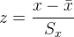
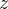

| テスト理論 |
| テスト理論 |
同じ100点満点のテストであっても、例えば60点という点数の意味は、そのテストで高い点数をどれくらい取りやすいかによって変わってくる。
Figure 5 は、3つのテストの得点分布を仮想的に表したものである。 テスト1に比べて、テスト3の方が赤線で示した60点以上を取った回答者の割合が多い。 このことは、テスト1の方がテスト3よりも平均が低く難しいため、同じ60点でもよりよい点数であることを表している。
一方、テスト2はテスト1と平均は同じである。 しかし、テスト1に比べてテスト2の方が60点以上を取った回答者の割合が多い。 これは、テスト1の方がテスト2より得点の分散が小さいためである。 このため、同じ60点でもテスト1で取った方がよりよい点数となっている。
つまり、テストの得点の意味は、テストの難しさ（平均）と平均から外れた得点の取りにくさ（分散）に左右されるということである。 とすれば、どのテストも平均と分散が同じになるよう得点を変換すれば、異なるテスト間でもその得点を比較できるようになる。
一般に、テスト得点 を
を
|  | (23) |
と変換したものを標準得点（得点）といい、このような操作を行うことを標準化という。 標準得点は、もとの分布がどのようであれ、その平均は0、標準偏差は1となる。
Table 4 は、同じ60点が標準得点で何点になるのか、3つのテスト（Figure 5に示したものと同じ）で算出したものである。 ここには、次に説明する偏差値も書き入れてある。 テスト1で60点を取った場合が最も標準得点が高く、他の2つのテストの60点に比べて良い（上位の）点に相当することがわかる。
平均 |
標準偏差 |
標準得点 |
偏差値 |
|
テスト1 |
50 |
10 |
1.0 |
60 |
テスト3 |
50 |
20 |
0.5 |
55 |
テスト2 |
80 |
10 |
-2.0 |
30 |
| テスト理論 |